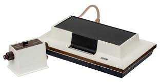
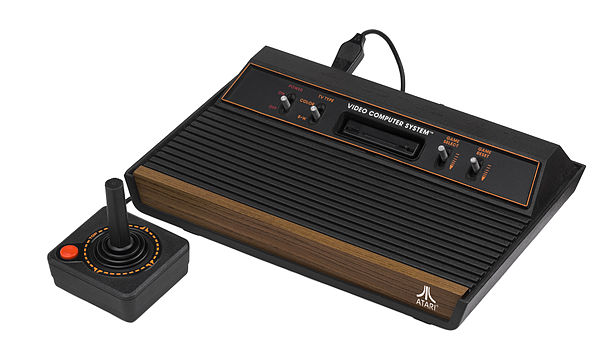
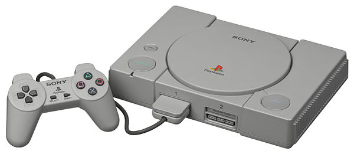
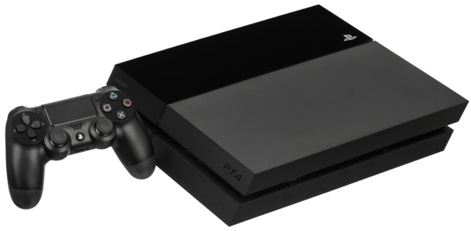
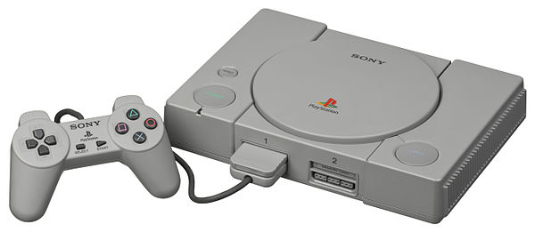
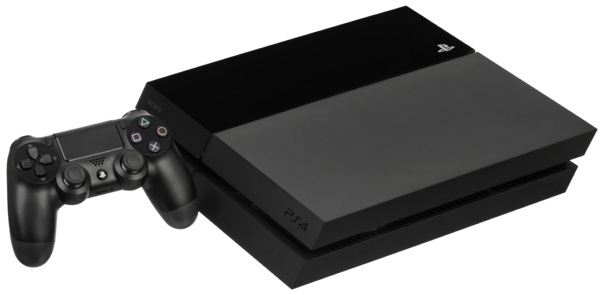

A Brief History in Gaming and Console Advancements
Author: Markus Katen
Initially gaming was not played on personal consoles, but instead large and bulky machines with little to no visuals.
The first example of this is the Westinghouse display at the world fair where people would control a player and play the traditional game Nim.
It wasn’t until 1968 did Ralph Baer patent an interactive television game, and 1972 did the Magnavox Odyssey come out from it.

Throughout the early times of video games multiple war based games were popular in theme of the Korea, Vietnam, and even World wars.
This was the start of the extravagant golden age of video games with Pong starting the revolution.
Up until 1977 it consisted of constant new Odyssey’s from Magnavox and Pongs from Atari as well as a few other companies such as Nintendo entering the competition.
But in 1977 Coleco releases many games and Atari releases its first home game console the VCS later named the 2600.

However, this was not the end of arcades nor the machines within,
because the following year the incredibly popular space invaders came out and 2 years after that the familiar face of Pac-man released.
In the meantime, Mattel created the first game console with handheld controllers that resemble the ones we know today.
The years coming then brought upon great classic and unforgettable games such as Donkey Kong in 1981, Tron in 1982, M.U.L.E in 1983,
and the most selling franchise of all time, Tetris in 1984.
Next was possibly the main reason why arcades are no longer used today, Nintendo’s NES releasing in 1985.
 After that a plethora of games got their start and new genres were introduced.
Such as educational games like Reader Rabbit and Jumpstart, RPG’s like the Dungeons and Dragons or The Legend of Zelda, and also sport games like the ever-so-popular Madden series.
In 1989 popular new systems were brought to the market by both Sega and Nintendo.
Nintendo released the first handheld console the Game Boy and Sega released the Genesis
which was the birthplace of Sonic 2 years later in 1991.
Mortal Kombat may have been the singular reason some arcades managed to stay in business
(this was when Mortal Kombat was an arcades system instead of a video game available on home consoles).
Eventually arcades did go out of business and are practically extinct at this point.
1994 introduced Warcraft Orcs & Humans which inspired many more PC games such as Tomb Raider in 1996.
The next big console was the PlayStation by Sony in 1995

then followed by the Xbox by Microsoft in 2000 that rivaled the successor of Sony’s PlayStation the PlayStation 2
(wow so original am I right man). In 2002 the U.S military helped create a new generation of shooting games.
In 2003 Steam was released and did poorly, but today it is the main source for PC game purchases.
2003 on included multiple consoles such as the Xbox 360, PlayStation 3, and Wii, and thousands of games and new genres such as mobile games survival games and MOBA’s.
Minecraft released in 2010 and reached to the 2nd most selling franchise just behind Tetris.
Now people use PC’s, Xbox 720’s (Nov. 2013), PlayStation 4’s (Nov. 2013), Nintendo 3DS' (Feb. 2014) and Wii U’s (Nov. 2012) for game play.

After that a plethora of games got their start and new genres were introduced.
Such as educational games like Reader Rabbit and Jumpstart, RPG’s like the Dungeons and Dragons or The Legend of Zelda, and also sport games like the ever-so-popular Madden series.
In 1989 popular new systems were brought to the market by both Sega and Nintendo.
Nintendo released the first handheld console the Game Boy and Sega released the Genesis
which was the birthplace of Sonic 2 years later in 1991.
Mortal Kombat may have been the singular reason some arcades managed to stay in business
(this was when Mortal Kombat was an arcades system instead of a video game available on home consoles).
Eventually arcades did go out of business and are practically extinct at this point.
1994 introduced Warcraft Orcs & Humans which inspired many more PC games such as Tomb Raider in 1996.
The next big console was the PlayStation by Sony in 1995

then followed by the Xbox by Microsoft in 2000 that rivaled the successor of Sony’s PlayStation the PlayStation 2
(wow so original am I right man). In 2002 the U.S military helped create a new generation of shooting games.
In 2003 Steam was released and did poorly, but today it is the main source for PC game purchases.
2003 on included multiple consoles such as the Xbox 360, PlayStation 3, and Wii, and thousands of games and new genres such as mobile games survival games and MOBA’s.
Minecraft released in 2010 and reached to the 2nd most selling franchise just behind Tetris.
Now people use PC’s, Xbox 720’s (Nov. 2013), PlayStation 4’s (Nov. 2013), Nintendo 3DS' (Feb. 2014) and Wii U’s (Nov. 2012) for game play.



Sources & Links: Video Game History Timeline,
Console Timeline